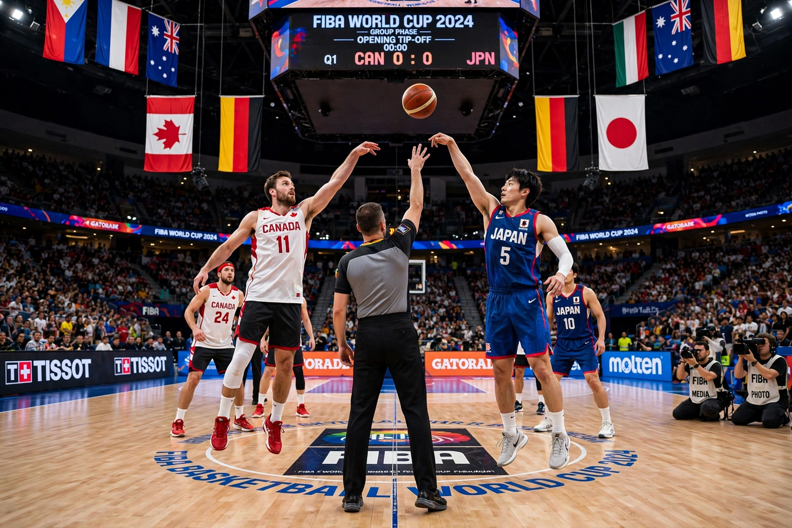

From Wikipedia, the free encyclopedia
| FIBA Basketball World Cup | |
|---|---|
 Two national teams contesting a tip-off in a large indoor arena during a World Cup game | |
| Founded | 1950 (first held in Buenos Aires, Argentina) |
| Governing body | FIBA |
| Teams | 32 (finals tournament) |
| Most titles | United States and Yugoslavia (5 each) |
| Most recent champions | Germany (2023) |
| Next edition | 2027, Qatar |
The FIBA Basketball World Cup is the flagship international basketball tournament for men's national teams, organised by FIBA and held every four years. First played in Argentina in 1950, when the hosts won the title, it was known as the FIBA World Championship until being renamed the Basketball World Cup for the 2014 edition in Spain. The winning team receives the Naismith Trophy, named after the sport's inventor, James Naismith. Alongside the Olympic basketball tournament, it is one of the two most prestigious titles in the international game.
The tournament grew from ten teams in 1950 to its modern 32-team format, introduced for the 2019 edition in China — the first held in Asia's largest basketball market — which was followed by the 2023 tournament co-hosted by the Philippines, Japan and Indonesia, the first World Cup staged across three countries. The Soviet Union and Yugoslavia dominated the mid-20th-century competition; the United States, fielding amateur and later NBA players, has won five titles, most recently in 2014. Spain won in 2006 and 2019, and Germany claimed its first world title in 2023, defeating Serbia in the final in Manila.
Teams qualify through continental windows held over roughly two years in Africa, the Americas, Asia-Oceania and Europe, administered alongside regional championships such as EuroBasket. The finals tournament opens with a group phase, after which the leading teams advance to a knockout bracket culminating in the final. Since 2019 the World Cup also serves as a direct qualification route for the Olympic Games. The United States team, despite sending rosters short of its biggest NBA stars in some cycles, remains the benchmark programme in participation and medals.
Brazil's Oscar Schmidt is the tournament's celebrated all-time scorer, famed for his prolific performances in the 1980s despite his country never winning the event. Argentina's triumph on home soil in 1950 and its golden-generation final appearance in 2002 bookend its proud World Cup history.
Categories: FIBA Basketball World Cup | Basketball competitions | World championships in basketball